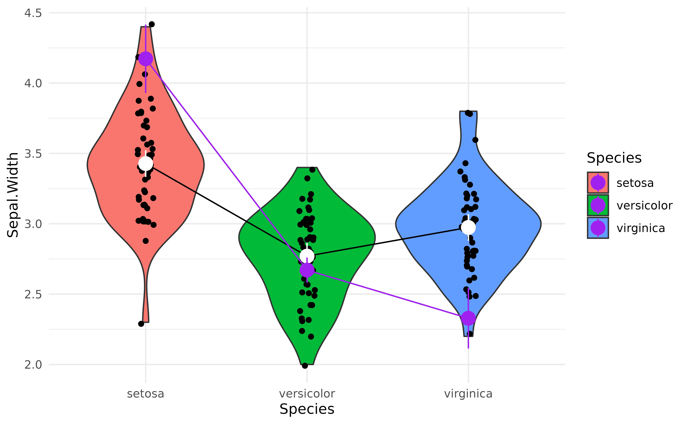

What are, why use and how to get marginal means
Source:vignettes/estimate_means.Rmd
estimate_means.RmdThis vignette will introduce the concept of marginal means.
Raw Means
The iris
dataset, available in base R, contains observations of
three types of iris flowers (the Species
variable); Setosa, Versicolor and Virginica,
for which different features were measured, such as the length and width
of the sepals and petals.
A traditional starting point, when reporting such data, is to start
by descriptive statistics. For instance, what is the mean
Sepal.Width for each of the three species.
We can compute the means very easily by grouping the observations by species, and then computing the mean and the standard deviation (SD):
> # Species=setosa
>
> Variable | Mean | SD | IQR | Range | Skewness | Kurtosis | n | n_Missing
> --------------------------------------------------------------------------------------
> Sepal.Width | 3.43 | 0.38 | 0.52 | [2.30, 4.40] | 0.04 | 0.95 | 50 | 0
>
> # Species=versicolor
>
> Variable | Mean | SD | IQR | Range | Skewness | Kurtosis | n | n_Missing
> --------------------------------------------------------------------------------------
> Sepal.Width | 2.77 | 0.31 | 0.50 | [2.00, 3.40] | -0.36 | -0.37 | 50 | 0
>
> # Species=virginica
>
> Variable | Mean | SD | IQR | Range | Skewness | Kurtosis | n | n_Missing
> --------------------------------------------------------------------------------------
> Sepal.Width | 2.97 | 0.32 | 0.40 | [2.20, 3.80] | 0.37 | 0.71 | 50 | 0We can also visualize it with a plot:
library(ggplot2)
ggplot(iris, aes(x = Species, y = Sepal.Width, fill = Species)) +
geom_violin() +
geom_jitter(width = 0.05) +
theme_modern()
However, these raw means might be biased, as the number of observations in each group might be different. Moreover, there might be some hidden covariance or mediation with other variables in the dataset, creating a “spurious” influence (confounding) on the means.
How can we take these influences into account while calculating means?
Marginal Means
Another way of analysing the means is to actually
statistically model them, rather than simply describe
them as they appear in the data. For instance, we could fit a simple
Bayesian linear regression modelling the relationship between
Species and Sepal.Width.
Marginal means are basically means extracted from a statistical
model, and represent average of response variable (here,
Sepal.Width) for each level of predictor variable (here,
Species).
library(modelbased)
model <- lm(Sepal.Width ~ Species, data = iris)
means <- estimate_means(model, by = "Species")
means> Estimated Marginal Means
>
> Species | Mean | SE | 95% CI | t(147)
> ------------------------------------------------
> setosa | 3.43 | 0.05 | [3.33, 3.52] | 71.36
> versicolor | 2.77 | 0.05 | [2.68, 2.86] | 57.66
> virginica | 2.97 | 0.05 | [2.88, 3.07] | 61.91
>
> Variable predicted: Sepal.Width
> Predictors modulated: SpeciesNote that the means computed here are not that different than the raw
means we created above. From which we can surmise that there are not
many spurious influences that we need to worry about in the
iris dataset. But this might not be the case for your
dataset.
We can now add these means, as well as the credible interval (CI) representing the uncertainty of the estimation, as an overlay on the previous plot:
p <- ggplot(iris, aes(x = Species, y = Sepal.Width, fill = Species)) +
geom_violin() +
geom_jitter(width = 0.05) +
geom_line(data = means, aes(y = Mean, group = 1)) +
geom_pointrange(
data = means,
aes(y = Mean, ymin = CI_low, ymax = CI_high),
size = 1,
color = "white"
) +
theme_minimal()
p
Note that modelbased provides some automated plotting capabilities for quick visual checks:
plot(means)
Complex Models
The power of marginal means resides in the fact that they can be
estimated from much more complex models. For instance, we could fit a
model that takes into account the interaction with the other variable,
Petal.Width. The estimated means will be “adjusted” (or
will take into account) for variations of these other components.
model <- lm(Sepal.Width ~ Species + Petal.Width, data = iris)
means_complex <- estimate_means(model, by = "Species")
means_complex> Estimated Marginal Means
>
> Species | Mean | SE | 95% CI | t(146)
> ------------------------------------------------
> setosa | 4.17 | 0.12 | [3.93, 4.42] | 33.89
> versicolor | 2.67 | 0.05 | [2.58, 2.76] | 59.07
> virginica | 2.33 | 0.11 | [2.11, 2.54] | 21.39
>
> Variable predicted: Sepal.Width
> Predictors modulated: Species
> Predictors averaged: Petal.Width (1.2)Now let’s add to our previous plot the marginal means from the more complex model (shown in purple) next to each other, which should help us notice how the adjusted means change depending on the predictors.
p +
geom_line(data = means_complex, aes(y = Mean, group = 1), color = "purple") +
geom_pointrange(
data = means_complex,
aes(y = Mean, ymin = CI_low, ymax = CI_high),
size = 1,
color = "purple"
)
That’s interesting! It seems that after adjusting (“controlling for”)
the model for petal characteristics, the differences between
Species seem to be magnified!
But are these differences “significant”?
That’s where the contrast analysis comes into play! Click here to read the tutorial on contrast analysis.